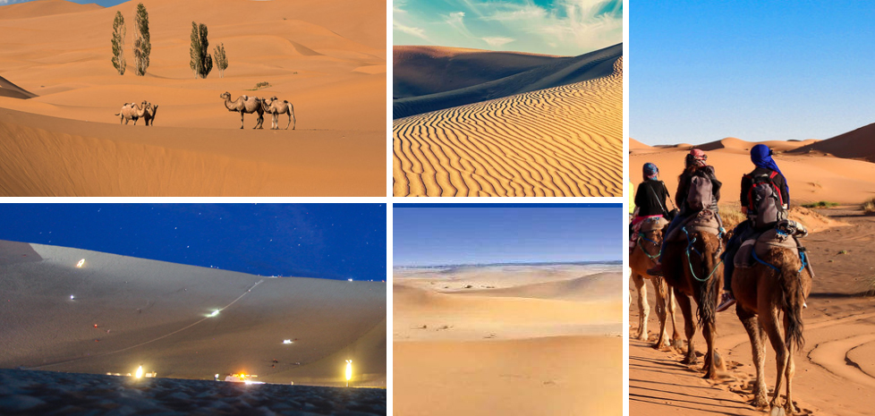
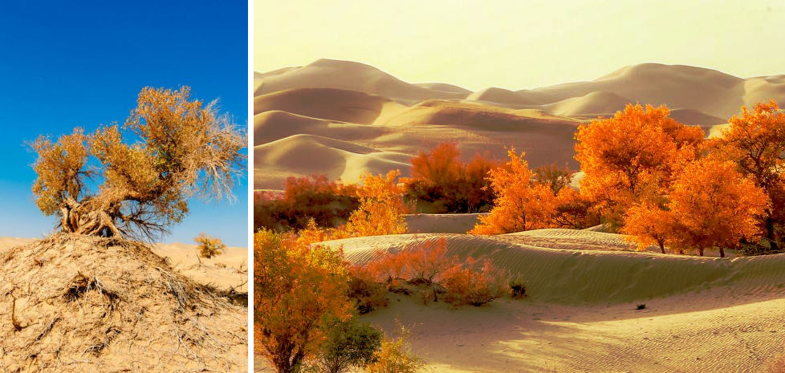

我的博客 | 攻略 | 随笔
我的博客 | 攻略 | 随笔

博主 简介
大家好，我是你们的旅行博主—— LonelyStone 。本人是一名资深旅行博主，外向型的内向人格，对世界的好奇心随年龄有增无减。同时是音乐、电影、旅行、文学、篮球、长跑、潜水爱好者。想在老去之前，看遍这颗星球的美好。
旅行格言格言： 人生不过一场旅行 ，你路过我,我路过你,然后各自回头,敬往事一杯烈酒。比起说走就走的旅行,很多人的生活都是日渐趋于平淡的怅然,缺少了一种享受生活的阳光悠然。
旅行足迹：在纳米比亚的死亡谷、土耳其卡帕多奇亚、日本镰仓、马达加斯加。 ......[详细]
2019.04.21 地点：塔克拉玛干沙漠
在这浩瀚的大漠我看到了姿态各异、生命力极强的胡杨。没有肥沃的土壤、没有充足的水分、没有适宜的环境，面对着寸草不生的塔克拉玛干大沙漠，却有胡杨毅然傲立戈壁，呈现出生命醉人的绿。

据说，守护在戈壁的胡杨，一千年不死，一千年不倒，一千年不朽，这种傲然挺立、不屈不挠的精神，深深震动了我，这正像生活在大漠边缘勤劳勇敢的人们。喜欢摄影的我，想努力用自己的视角体会这种精神。

HXZ9_IT
2020-1-2 15:38:37
风景太美了，感谢博主的分享，有时间一定去看看！
外星人
2020-1-15 15:05:37
大漠孤烟直，长河落日圆
o_cool
2020-2-14 10:38:36
前几年去过一次，风景可以，适合拍照。
网友意见留言板
电话：000-1234567
欢迎批评指正
博客简介 | Abou BOKE | 广告服务 | 联系我们 | 招聘信息 | 网站律师 | BOKE English | 注册 | 产品答疑
Copyright © 2016 - 2026 BOKE.coright All Rights Reserved